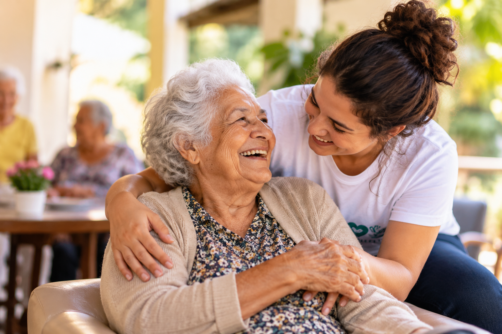

Convivência
Promovemos visitas, rodas de conversa, leitura e momentos de companhia.
ABRAÇO SOLIDÁRIO
Promovemos cuidado, companhia e participação social para pessoas idosas que vivem em instituições de acolhimento.
Conheça nossos projetos
O Abraço Solidário atua na promoção do cuidado, da convivência e da participação social de pessoas idosas residentes em instituições de acolhimento.
Nossa atuação busca aproximar voluntários e comunidade por meio de encontros, atividades culturais, momentos de lazer e ações de solidariedade.
Acreditamos que estar presente também é uma forma de cuidar. Por isso, valorizamos a escuta, o respeito às histórias de vida e a construção de vínculos que proporcionem momentos de acolhimento e companhia.
Promovemos visitas, rodas de conversa, leitura e momentos de companhia.
Organizamos atividades culturais, musicais e oficinas de artesanato.
Realizamos campanhas de arrecadação de roupas e itens de higiene conforme as necessidades.
Existem diferentes formas de contribuir com nossas ações. Compartilhe seu tempo, suas habilidades e sua disposição para fazer a diferença.
Quero ser voluntárioQuer saber mais sobre o Abraço Solidário ou participar das nossas ações? Entre em contato conosco.
E-mail: abracosolidario@projetoficticio.com
Telefone: (11) 00000-0000